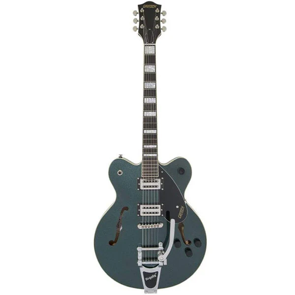
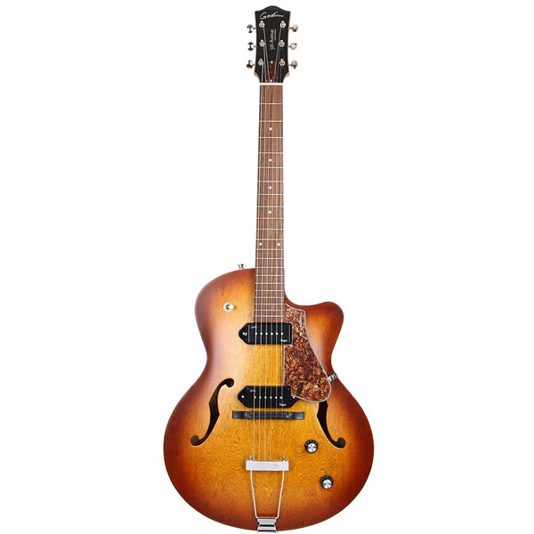
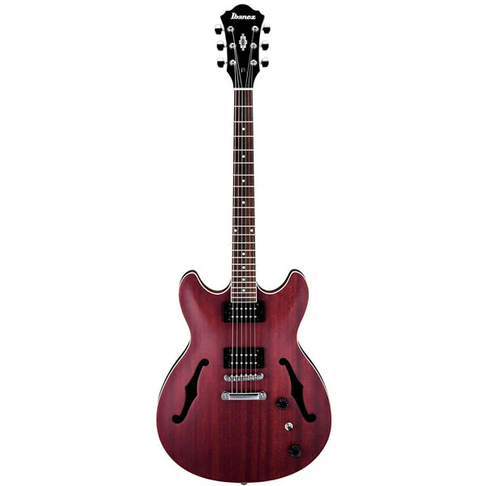

Guitar thân rỗng thường gắn liền với nhạc jazz và blues, nhưng bạn sẽ thấy chúng được chơi ở nhiều thể loại khác nhau. Trong khi chúng ta vẫn có những nghệ sĩ như Pat Metheny, George Benson, John Scofield và Lee Ritenour mang đến một số giai điệu jazz rất mượt mà, thì các nhạc sĩ nhạc rock như Dave Grohl, Jack White và Johnny Marr cũng được biết đến là những người rất thích thể loại rỗng và bán rỗng. guitar thân đàn. Mặc dù chủ yếu tập trung vào các chất âm tối hơn, nhưng guitar thân rỗng có thể được sử dụng trong nhạc blues, rock, hard rock và đôi khi là cả nhạc metal. Có rất nhiều biến thể khác nhau và mỗi thiết kế guitar này đều mang đến một chút gì đó khác biệt khi nói đến giai điệu cũng như chất lượng thẩm mỹ tuyệt vời.
Chúng tôi sẽ bắt đầu bài viết này bằng cách xem xét những cây đàn guitar điện thân rỗng và bán rỗng tốt nhất ở mỗi mức giá, nhưng nếu bạn muốn tìm hiểu thêm về chúng trước khi đọc danh sách này, hãy xem hướng dẫn thông tin ở cuối trang.
Dưới đây là những cây đàn guitar thân rỗng và bán rỗng tốt nhất:
1. Gretsch G2622T Streamliner
Gretsch là một tay chơi lão làng trong trò chơi guitar điện thân rỗng. Họ có lịch sử lâu dài, nhưng vẫn đi đầu trong đổi mới, đồng thời luôn trung thành với các đặc điểm và tính năng thiết kế đặc trưng của họ. Đơn giản là G2622T Streamliner xứng đáng nhận được mọi lời khen ngợi, đặc biệt là vì nó kết hợp một số tính năng cải tiến với thiết kế thân đàn Streamliner cổ điển. Mặc dù chúng ta có một đội hình khuyết đôi tiêu chuẩn ở đây, nhưng hình dạng thân đàn cụ thể này hơi “offset – bất đối xứng”. Thân của cây đàn guitar cao cấp này được làm từ gỗ phong nhiều lớp, trong khi cần đàn được làm từ gỗ nato. Thiết kế hơi “offset” của cây đàn guitar được làm tròn với lớp hoàn thiện rất độc đáo, cũng như mặt trên hình vòm. Và ngay cả các tính năng cũng được thiết kế theo cách để tạo thành đàn guitar phong cách cổ điển. Đàn đi kèm với cầu nối Tune-o-Matic tiêu chuẩn kết hợp với bộ đuôi rung Bigsby được cấp phép. Streamliner có hai humbucker Broad'Tron BT-2S. Tuy nhiên, các điều khiển của nhạc cụ hơi khác so với những gì bạn mong đợi. Có một núm điều chỉnh âm lượng chính và hai nút điều chỉnh âm lượng riêng cho từng pickup. Và trên hết, chúng ta cũng có một master tone pot. Tất nhiên, tất cả điều này được theo sau bởi một công tắc bộ chọn pickup 3 chiều tiêu chuẩn. Cấu hình điều khiển cụ thể này mang lại một góc nhìn khác về toàn bộ quá trình định hình giai điệu trên nhạc cụ của bạn. Mục đích chính là sử dụng vị trí ở giữa khi cả hai pickup được chọn và điều chỉnh âm lượng tổng thể mà không làm hỏng sự cân bằng hoàn hảo mà bạn đã thực hiện.
Giai điệu: Đúng như thiết kế gợi ý, giai điệu của cây đàn này chủ yếu tập trung vào nhạc rock 'n' roll cổ điển và nhạc rockabilly. Tuy nhiên, thiết bị này vẫn cực kỳ linh hoạt, một phần nhờ vào việc sử dụng các điều khiển thông số có phần “độc đáo”. Tiếng guitar có hơi hướng blues và jazzy cũng như nó có thể bao trùm một số phong cách “mượt mà” hơn.
Tóm lại: Mặc dù thân đàn có gỗ nhiều lớp, có thể được coi là đặc điểm cấp thấp hơn so với gỗ nguyên khối, nhưng đây là một nhạc cụ đáng kinh ngạc khi xét đến mức giá của nó. Cây đàn guitar được chế tạo cực kỳ tốt và mang đến một gói chất lượng toàn diện hữu ích cho nhiều phong cách và thể loại chơi. Nhìn chung, chúng tôi có thể nói rằng đây là một trong những cây đàn guitar bán rỗng tốt nhất trong tầm tiền.
2. Godin 5th Avenue CW Kingpin II
Mang đến một số thiết kế độc đáo cho thị trường thân rỗng, Godin 5th Avenue CW Kingpin II xứng đáng với tất cả những lời khen ngợi mà nó nhận được. Trên thực tế, giá đàn rẻ nếu so với chất lượng của nhạc cụ này cũng như sự đơn giản trang nhã.
Thân đàn guitar mang hình dạng single-cutaway (khuyết đơn) cổ điển, nhưng khá rõ ràng đây là một cây rìu chủ yếu hướng đến nhạc jazz. Điều khá thú vị là chất liệu thân đàn chính của nhạc cụ không thường thấy ở những cây đàn bán trên thị trường.
Mặt trên, mặt bên và mặt sau của nhạc cụ này được làm từ anh đào Canada (cherry). Vì đây là cây đàn guitar có thân rỗng hoàn toàn (không phải thân bán rỗng) nên điều này ảnh hưởng lớn đến âm sắc và độ ngân của cây đàn. Cổ cũng được làm từ một vật liệu không phổ biến, gỗ phong bạc (silver leaf maple). Tuy nhiên, trên hết, chúng ta có một bàn phím bằng gỗ hồng đào tiêu chuẩn với 21 phím đàn. Chiều dài thang âm của cây đàn cũng có một chút khác biệt so với tiêu chuẩn thông thường với tổng chiều dài là 24,84 inch.
Cây đàn có ngựa đàn Graph Tech Tusq cùng với đuôi đàn Trapeze kiểu cổ điển. Thiết kế đặc biệt này giống với những cây guitar điện thân rỗng cổ điển từ cuối những năm 1940. Đi kèm với hai pickup single-coil (single-coil) Kingpin P90 tuyệt vời, cũng như các nút điều khiển tiêu chuẩn cho âm lượng, giai điệu và lựa chọn pickup 3 chiều, cây đàn này khá đơn giản để sử dụng.
Giai điệu: Mặt khác, nhạc cụ này có cách sử dụng rất cụ thể so với nhiều nhạc cụ khác mà chúng tôi đưa vào danh sách này. Trên thực tế, đây là một trong những cây guitar tốt nhất dành cho nhạc jazz mà bạn có thể tìm thấy trên thị trường hiện nay, đặc biệt là về giá của nó. Pickup P90 để phát âm một số âm cao hơn đó, mặc dù cấu trúc tổng thể của nhạc cụ làm tăng âm cuối. Ngoài ra, những chiếc pickup P90 được biết đến với âm sắc “mập hơn” và những chiếc mà chúng tôi có trên nhạc cụ này mang đến một loại âm thanh “mạnh mẽ” khá độc đáo.
Là một nhạc cụ thiên về nhạc jazz với phần thân hoàn toàn rỗng, bạn sẽ phải cẩn thận khi chơi với bàn đạp distortion đang bật vì phản hồi có thể trở thành một vấn đề thực sự. Godin 5th Avenue CW Kingpin II tỏa sáng nhất khi được ghép nối với một loại amp ống kiểu cũ, đặc biệt nếu chúng ta đang nói về những chiếc “American” truyền thống với ống 6L6 hoặc 6V6 trong phần amp công suất. Thêm một bộ overdrive đơn giản hoặc một bàn đạp overdrive, và bạn sẽ được thưởng thức.
Tóm lại: Từ trên xuống dưới, cây đàn này hoàn hảo cho việc chơi guitar theo phong cách jazz, blues hoặc thậm chí là acoustic.
3. Ibanez Artcore AS53
Trong khi Ibanez thường gắn liền với những cây đàn guitar hoàn hảo cho shred (chạy ngón), chủ yếu được sử dụng trong nhạc metal, công ty có một kho vũ khí khá đa dạng, bao gồm một số cây đàn guitar thân rỗng và bán rỗng tuyệt vời. Một trong những ví dụ thực sự nổi bật là AS53 từ dòng Artcore. Cây đàn này không chỉ kết hợp các đặc điểm âm sắc tuyệt vời với khả năng chơi tốt mà còn mang đến một thiết kế rất thời trang và bắt mắt. Đầu tiên, thân đàn được làm hoàn toàn bằng gỗ Sapele, với mặt trên được uốn cong tinh tế, các mặt và mặt sau được làm bằng gỗ chất lượng cao. Cây đàn này cũng đi kèm với cần đàn bằng gỗ gụ khá thoải mái, cũng như bàn phím bằng gỗ óc chó với 22 phím đàn trung bình. Cần đàn cũng tạo thành một cấu trúc ăn khớp với thân đàn với phần gót được thiết kế tỉ mỉ, giúp bạn dễ dàng di chuyển ở những khu vực phím đàn cao hơn.
Tất cả điều này được đi kèm với hai pickup humbucker Infinity R với nam châm gốm. Cùng với điều này, chúng ta cũng có một công tắc 3 chiều đơn giản và một núm âm lượng cũng như một núm chỉnh âm. Cây cầu Tune-o-Matic được mong đợi, cùng với một đuôi thanh chặn tiêu chuẩn theo phong cách của guitar Gibson.
Giai điệu: Bên cạnh việc là một cây guitar điện khá thoải mái và đẹp mắt, Ibanez Artcore AS53 có một giai điệu khá tuyệt vời và ứng dụng hơi đa dạng trong nhiều thể loại khác nhau. Việc bổ sung các pickup gốm mang lại một chút tăng cường cho âm trung và cao cấp trong Giai điệu. Tuy nhiên, bạn cũng sẽ trải nghiệm sự mượt mà và độ bền tuyệt vời nhờ cấu trúc bán rỗng của thân đàn.
Tóm lại: Xét rằng đây là một nhạc cụ khá rẻ, chúng tôi muốn nói rằng nó thực tế là một món đồ tuyệt vời với tất cả các tính năng mà chúng tôi đã đề cập. Chắc chắn, đó là một phiên bản rút gọn của mẫu 335 cổ điển, nhưng nó mang lại quá nhiều phẩm chất cho những người thích nhạc blues, blues rock, hard rock và thậm chí cả nhạc jazz. Đó là một lựa chọn hoàn hảo cho người mới bắt đầu, người chơi ở trình độ trung cấp hoặc thậm chí là những người có kinh nghiệm chỉ muốn tìm hiểu về guitar điện thân rỗng.